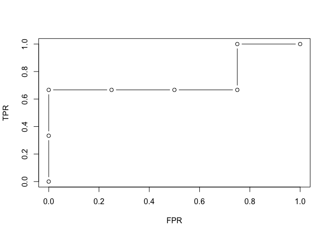

evabic aims to evaluate binary classifiers by specifying what is detected as true and what is actually true. It has no dependencies.
Installation
You can install the development version from GitHub with:
# install.packages("remotes") remotes::install_github("abichat/evabic")
Measures
evabic provides handy functions to compute 18 different measures. Each function begins with ebc_*.
Available measures include True Positive Rate (Sensitivity or Recall), True Negative Rate (Specificity), Positive Predictive Value (Precision), False Discovery Rate, Accuracy, F1…
evabic::ebc_allmeasures #> [1] "TP" "FP" "FN" "TN" "TPR" "TNR" "PPV" "NPV" "FNR" "FPR" #> [11] "FDR" "FOR" "ACC" "BACC" "F1" "PLR" "NLR" "DOR"
All measures are computed from the confusion matrix:

Example
Let’s use evabic on a toy example.
library(evabic)
Consider three variables X1, X2 and X3, Y a variable predicted by this three variables, and 4 more conditionally independent variables X4 to X7.
set.seed(42) X1 <- rnorm(50) X2 <- rnorm(50) X3 <- rnorm(50) predictors <- paste0("X", 1:3) df_lm <- data.frame(X1 = X1, X2 = X2, X3 = X3, X4 = X1 + X2 + X3 + rnorm(50, sd = 0.5), X5 = X1 + 3 * X3 + rnorm(50, sd = 0.5), X6 = X2 - 2 * X3 + rnorm(50, sd = 0.5), X7 = X1 - 0.2 * X2 + rnorm(50, sd = 2), Y = X1 - 0.2 * X2 + 3 * X3 + rnorm(50))
We use a linear regression to detect the actual predictors (do not select significant variables like this at home, it’s a bad way to do so).
model <- lm(Y ~ ., data = df_lm) summary(model) #> #> Call: #> lm(formula = Y ~ ., data = df_lm) #> #> Residuals: #> Min 1Q Median 3Q Max #> -1.66504 -0.65784 -0.05977 0.51720 2.14833 #> #> Coefficients: #> Estimate Std. Error t value Pr(>|t|) #> (Intercept) 0.13537 0.14528 0.932 0.35678 #> X1 1.35385 0.44929 3.013 0.00437 ** #> X2 0.09974 0.46105 0.216 0.82977 #> X3 3.67893 1.18759 3.098 0.00347 ** #> X4 -0.22998 0.33164 -0.693 0.49183 #> X5 -0.17073 0.30744 -0.555 0.58161 #> X6 -0.04023 0.28381 -0.142 0.88795 #> X7 0.07055 0.09245 0.763 0.44966 #> --- #> Signif. codes: 0 '***' 0.001 '**' 0.01 '*' 0.05 '.' 0.1 ' ' 1 #> #> Residual standard error: 1.005 on 42 degrees of freedom #> Multiple R-squared: 0.921, Adjusted R-squared: 0.9079 #> F-statistic: 69.99 on 7 and 42 DF, p-value: < 2.2e-16 pvalues <- summary(model)$coefficients[-1, 4] pvalues #> X1 X2 X3 X4 X5 X6 #> 0.004366456 0.829771754 0.003469737 0.491828466 0.581608670 0.887948400 #> X7 #> 0.449664443 detected_var <- names(pvalues[pvalues < 0.05]) detected_var #> [1] "X1" "X3"
Here, we selected two predictors among the three true predictors.
Single measures are available with ebc_*() functions.
ebc_TPR(detected = detected_var, true = predictors) #> [1] 0.6666667 ebc_ACC(detected = detected_var, true = predictors, m = 7) # the total size of the set is 7 #> [1] 0.8571429
You can also ask for several measures in a single row summary format with ebc_tidy().
ebc_tidy(detected = detected_var, true = predictors, m = 7, # you can use `measures = ebc_allmeasures` to compute all measures measures = c("TPR", "TNR", "FDR", "ACC", "BACC", "F1")) #> TPR TNR FDR ACC BACC F1 #> 1 0.6666667 1 0 0.8571429 0.8333333 0.8
Note that evabic also supports named logicals for detected and true arguments, but they must be named (see the add_names() function if needed).
pvalues < 0.05 #> X1 X2 X3 X4 X5 X6 X7 #> TRUE FALSE TRUE FALSE FALSE FALSE FALSE ebc_tidy(detected = pvalues < 0.05, true = predictors, m = 7, measures = c("TPR", "TNR", "FDR", "ACC", "BACC", "F1")) #> TPR TNR FDR ACC BACC F1 #> 1 0.6666667 1 0 0.8571429 0.8333333 0.8
With ebc_tidy_by_threshold(), you can ask for the evolution of measures according to a moving threshold if you provide the vector of p-values (or any score).
df_measures <- ebc_tidy_by_threshold(detection_values = pvalues, true = predictors, m = 7, measures = c("TPR", "FPR", "FDR", "ACC", "BACC", "F1")) df_measures #> threshold TPR FPR FDR ACC BACC F1 #> 1 0.003469737 0.0000000 0.00 NaN 0.5714286 0.5000000 0.0000000 #> 2 0.004366456 0.3333333 0.00 0.0000000 0.7142857 0.6666667 0.5000000 #> 3 0.449664443 0.6666667 0.00 0.0000000 0.8571429 0.8333333 0.8000000 #> 4 0.491828466 0.6666667 0.25 0.3333333 0.7142857 0.7083333 0.6666667 #> 5 0.581608670 0.6666667 0.50 0.5000000 0.5714286 0.5833333 0.5714286 #> 6 0.829771754 0.6666667 0.75 0.6000000 0.4285714 0.4583333 0.5000000 #> 7 0.887948400 1.0000000 0.75 0.5000000 0.5714286 0.6250000 0.6666667 #> 8 Inf 1.0000000 1.00 0.5714286 0.4285714 0.5000000 0.6000000
This makes it easy to plot various-threshold curves like ROC curve.
plot(df_measures$FPR, df_measures$TPR, type = "b", xlab = "FPR", ylab = "TPR")

And finally, you can ask for the AUC, the area under the ROC curve.
ebc_AUC(detection_values = pvalues, true = predictors, m = 7) #> [1] 0.75 ebc_AUC_from_measures(df_measures) #> [1] 0.75